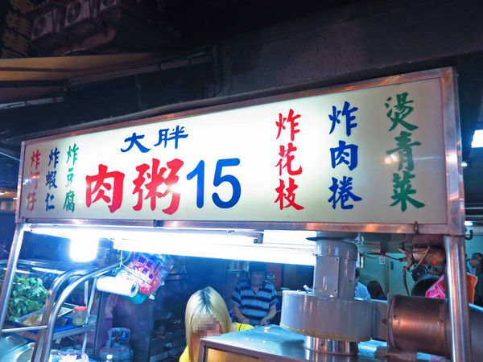

什麼？~~現在竟然還有15元肉粥，真的假的？
外面現在都賣一碗25、30元了，竟然還有賣15元？
沒錯~~他就是我們今天要介紹的
台北萬華夜市裡的
【台北萬華美食】大胖肉粥-15元超便宜銅板美食
除了肉粥以外，還有很多小菜可以選擇
店內環境
設在騎樓下，基本上只要是騎樓環境不是說非常的好
所以會在意的朋友，可能要考慮一下
肉粥15元
一上桌就聞到陣陣的油蔥香氣
每碗肉粥裡，都會有一塊大肉羹
除了肉羹以外，沒有其它配料
可以喝的到粥裡滿滿的油蔥味，還不錯
米粒也粒粒分明~~ 以15元來說，CP值滿高的
炸豆腐 30元
沾著鹹甜鹹甜的醬油膏 搭粥剛剛好~~
紅燒肉 50元
這的紅燒肉乾的一點都不乾柴
很有多汁的感覺，有點像是水煮三層肉的口感
不油膩
另外小菜都會有泡菜
這小黃瓜帶有一點點酸酸的口感
很適合開胃
吃著吃著，吃完了
結論： 這次來到台北萬華的
【台北萬華美食】大胖肉粥-15元超便宜銅板美食
肉粥相當的便宜，但小菜就是正常的價格
但整體來說味道算不錯
有機會可以來吃吃看哦
店家資訊：
店名：大胖肉粥
營業時間：22:00~凌晨05:00
地址：台北市萬華區華西街188號